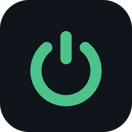

Schedule when your PC turns off and on, and control it from your phone. A Windows app and an Android app. No account, no server: the phone talks only to your own PCs.
Contact: muneermilleror@gmail.com
By Mogamat Muneer Miller · muneermiller.github.io